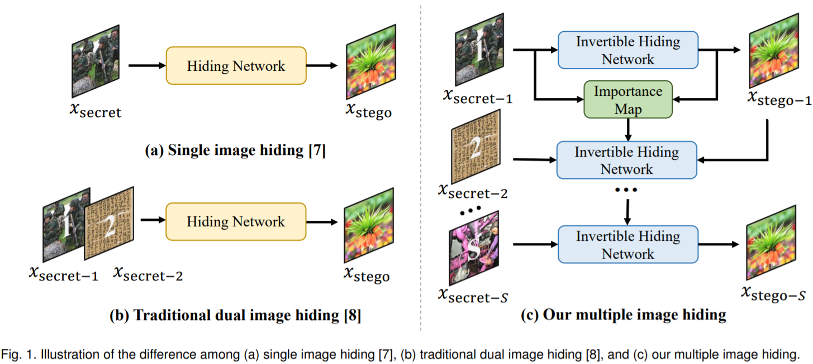

Junpeng Jing 景俊鹏MasterDept. of Cyber Science and Technology Beihang University (BUAA) Beijing, China Email: junpengjing@buaa.edu.cn Github: Link Google Scholar: Link I’m looking for a PhD position. Here is my full Curriculum Vitae (CV) |
|
Biography
I am a Master student at Beihang University, co-advised by Professor Zhenyu Guan, Mai Xu and Xin Deng. I completed my Bachelor Degree in Dept. of Electronic Information Engineering, Beihang University in 2020.
My research interests include stereo matching, optical flow, super-resolution, compression and reversible image conversion.
Experience
- May.2022 - Present, Research Intern, Megvii Research
Publications
|  | DeepMIH: Deep Invertible Network for Multiple Image Hiding Junpeng Jing1, Zhenyu Guan1, Xin Deng, Mai Xu, Lai Jiang, Zhou Zhang, Yipeng Li IEEE Transactions on Pattern Analysis and Machine Intelligence (TPAMI), 2022 [Paper] [Code] [速览] |
 |
HiNet: Deep Image Hiding by Invertible Network. Junpeng Jing, Xin Deng, Mai Xu, Jianyi Wang, Zhenyu Guan IEEE/CVF International Conference on Computer Vision (ICCV), 2021. [Paper] [Code] |
Competitions
 |
Winner (1st place) on Stereo Matching Track (Offical announcement will be in 10-23) Robust Vision Challenge, ECCV Workshop 2022 [Link] |
 |
6th place on Stereo Image Super-Resolution Track NTIRE Challenge, CVPR Workshop 2022 [Link] |
Patent
- An Image Hiding Technology and Method. C.N. 202011290006.9
Selected Honors/Scholarships
-
Top-10 Graduate Students, 2022
- Top 0.5%, Highest honor of the graduates in BUAA
-
National Scholarship, 2021
- Top 1%, Awarded by the National Ministry of Education